Plots for Ensemble Feature Selection Results
Source:R/EnsembleFSResult.R
autoplot.EnsembleFSResult.RdVisualizations for EnsembleFSResult.
The argument type determines the type of plot generated.
The available options are:
"pareto"(default): Scatterplot of performance versus the number of features, possibly including the Pareto front, which allows users to decide how much performance they are willing to trade off for a more sparse model."performance": Boxplot of performance across the different learners used in the ensemble feature selection process. Each box represents the distribution of scores across different resampling iterations for a particular learner."n_features: Boxplot of the number of features selected by each learner in the different resampling iterations."stability": Barplot of stability score for each learner used in the ensemble feature selection. This plot shows how similar are the output feature sets from each learner across the different resamplings.
Usage
# S3 method for EnsembleFSResult
autoplot(
object,
type = "pareto",
pareto_front = "stepwise",
stability_measure = "jaccard",
stability_args = NULL,
theme = theme_minimal(),
...
)Arguments
- object
- type
(character(1)):
Type of the plot. See description.- pareto_front
(
character(1))
Type of pareto front to plot. Can be"stepwise"(default),"estimated"or"none".- stability_measure
(
character(1))
The stability measure to be used in casetype = "stability". One of the measures returned bystabm::listStabilityMeasures()in lower case. Default is"jaccard".- stability_args
(
list)
Additional arguments passed to the stability measure function.- theme
(
ggplot2::theme())
Theggplot2::theme_minimal()is applied by default to all plots.- ...
(ignored).
Examples
# \donttest{
if (requireNamespace("mlr3")) {
library(mlr3)
library(mlr3fselect)
set.seed (42)
efsr = ensemble_fselect(
fselector = fs("random_search"),
task = tsk("sonar"),
learners = lrns(c("classif.rpart", "classif.featureless")),
init_resampling = rsmp("subsampling", repeats = 5),
inner_resampling = rsmp("cv", folds = 3),
measure = msr("classif.ce"),
terminator = trm("evals", n_evals = 5)
)
# Pareto front (default, stepwise)
autoplot(efsr)
# Pareto front (estimated)
autoplot(efsr, pareto_front = "estimated")
# Performance
autoplot(efsr, type = "performance")
# Number of features
autoplot(efsr, type = "n_features")
# stability
autoplot(efsr, type = "stability")
}

# }